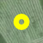

Right-click on the map to (re)start the simulation from the corresponding location.
Use left and right arrows to steer, up and down arrows to control the speed of the canopy.

The landing target. Your goal is to be in this spot at
zero altitude. You can use drag-and-drop to reposition.
This arrow represents your canopy. Click in any place on the map to start the simulation from that position.
Show the projected landing point. Provided the wind conditions don't
change and no input is given to the canopy, it will land on the pink
point.
Show points you can reach the landing target from. If the
canopy is outside this area, the target point is out of reach,
choose an alternate landing area.
Show reachable area: you can still reach those points from
the current position and altitude. Points outside this area are no
longer reachable no matter what inputs are given to the canopy.
Press P to pause/unpause: the time stops, but you still can turn your canopy in place to discover its range and possibilities.
Нажатием правой кнопки мыши можно начать (заново) снижение под куполом с заданной высоты.
Для управления используется стрелки: влево-вправо для управления куполом, вверх-вниз для выбора режима.
Желаемая точка приземления. Ее положение можно настраивать,
перетаскивая ее по карте.
Это ваш купол. Нажмите в любом месте карты правой кнопкой мыши: он там появится и начнется снижение!
Отображение предполагаемой точки приземления: если условия останутся
прежними и не будет производиться корректировок траектории, купол
приземляется в розовую точку.
Отображение конуса возможностей купола. При заданной силе ветра
и текущей высоте только при нахождении внутри указанной области все еще
возможно приземлиться в выбранной точке площадки.
Отображение области на земле, в которую возможно приземлить
купол из его текущего положения. Если ваша цель находится вне этой
области, то никакими корректировками траектории туда попасть уже
невозможно.
Нажатием P можно приостановить или продолжить симуляцию: время останавливается, но купол можно повернуть для исследования достижимых точек на карте.